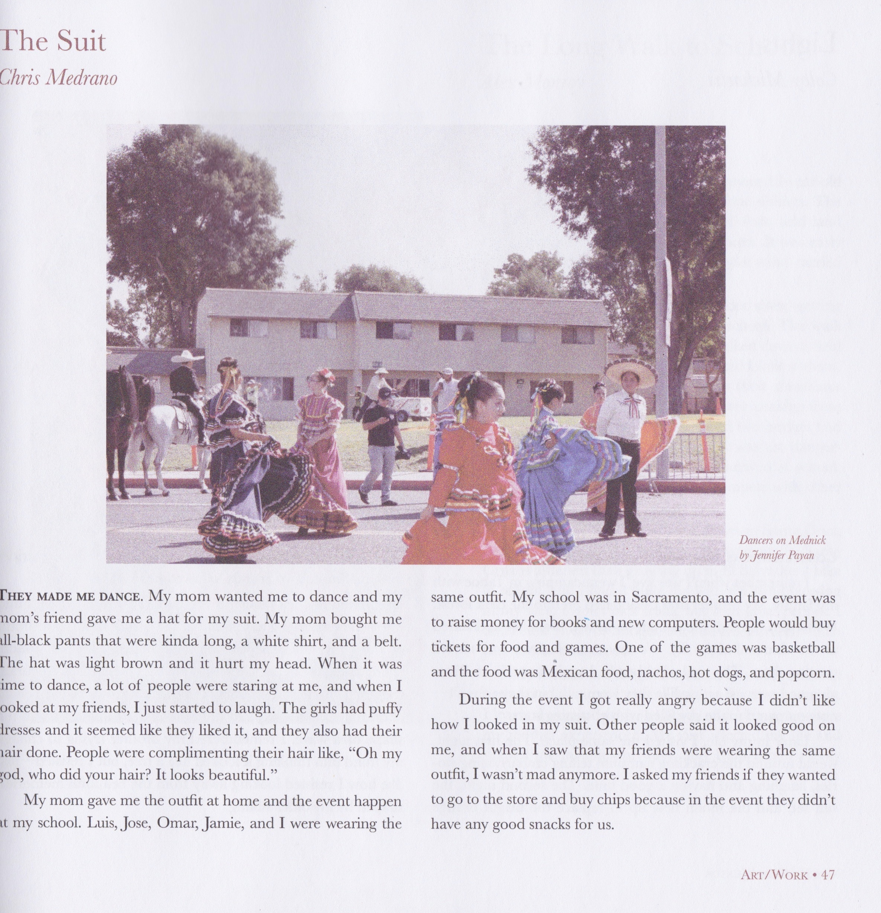
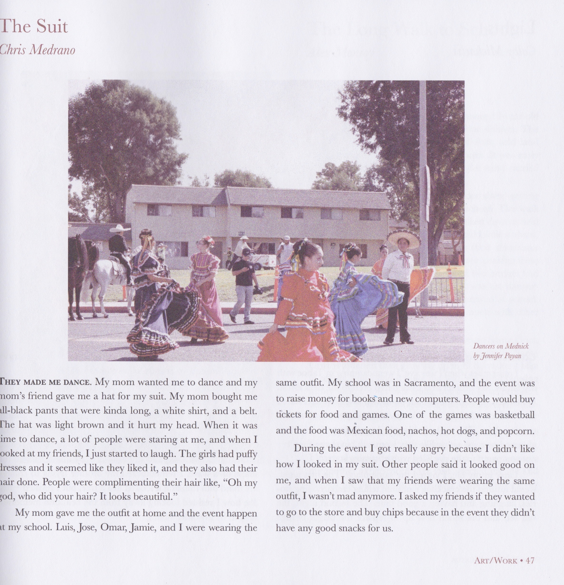
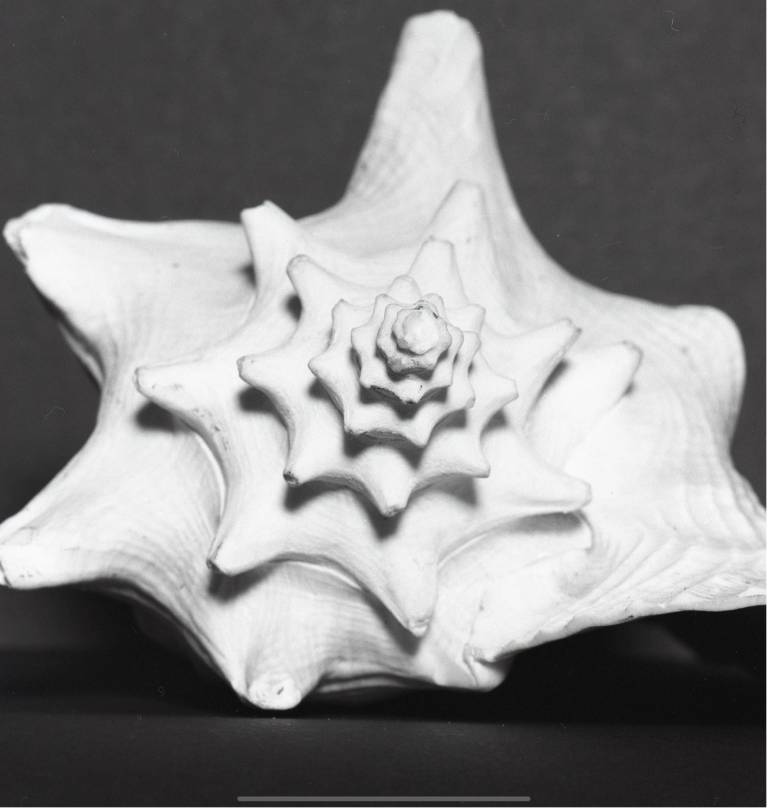
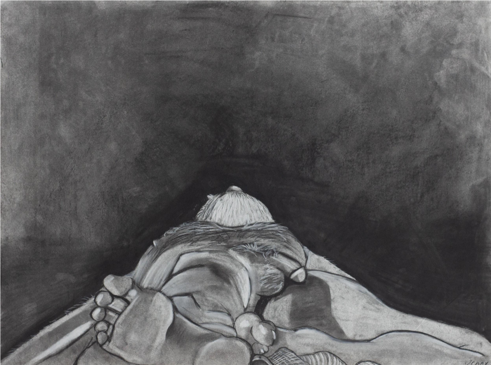
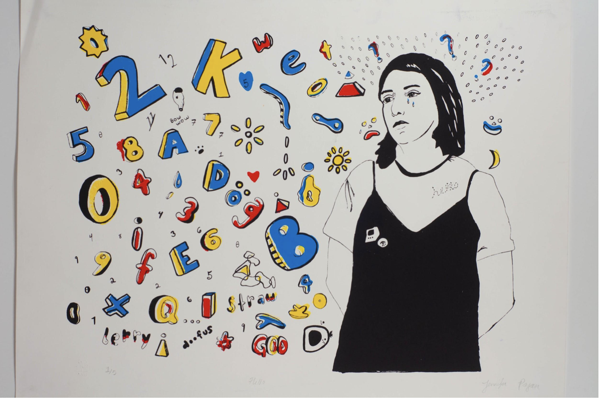
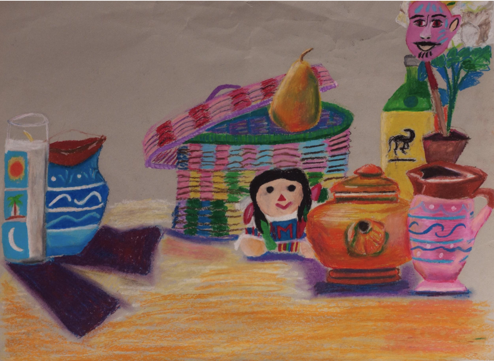

Archivist.Art Historian.Artist.Photographer.
A passion for finding the stories (both big and small) hidden in artifacts of the past.
ContactJenniferPayan

About Me
Hello!
My name is Jennifer and I am an Arts & Culture Tutor at the Vincent Price Art Museum as well as a Teaching Artist Assistant with the Barrio Mobile Art Studio at Self Help Graphics & Art. My experiences in both the arts and organic waste management have taught me the value of connecting the two disciplines to promote sustainable practices, foster education, and create access to green spaces and the visual arts.
Contact
.jpg)
Art Experience
8.20.2021 - Present
Student Tutor Level 2
- Drafted summaries and statements for future exhibitions.
- Created and updated condition reports for Laura Aguilar: Show and Tell traveling exhibition.
- Contributed one blog post for VPAM’s blog.
- Researched artists, collections, theories, and scholarship for the development of future exhibitions.
6.14.21 - 8.20.21
Curatorial and Collections Intern
- Drafted summaries and statements for future exhibitions.
- Created and updated condition reports for Laura Aguilar: Show and Tell traveling exhibition.
- Contributed one blog post for VPAM’s blog.
- Researched artists, collections, theories, and scholarship for the development of future exhibitions.
9.1.2021 - 11.1.2021
Studio Intern
- Provided assistance with an upcoming installation
- Cut and glued paper onto panels
9.1.2020 - 3.1.2021
Archives Program Associate
- Digitized over 2.000 negatives from the Japanese-American collection.
- Curated a virtual exhibition on Historypin, and wrote exhibition statements and captions.
01.5.2022 - Present
Undergraduate Student Researcher
- Created descriptions for art objects using Archives Space and Omeka
- Assist with gathering materials for students and researchers
- Trained in cultural heritage archive practices.
6.15.2020 - 8.31.2020
Archival Preservation and Research Intern
- Created descriptions for art objects using Archives Space and Omeka
- Researched objects from Gronk Papers archive.
- Trained in cultural heritage archive practices.
01.2019 - Present
Teaching Artist
- Handled and organized SHG's collection of serigraph prints.
- Operated Salesforce database and data entry.
- Digitized and color corrected photographs of serigraph collection.
6.14.2018 - 8.24.2018
Archives and Documentation Intern
- Handled and organized SHG's collection of serigraph prints.
- Operated Salesforce database and data entry.
- Digitized and color corrected photographs of serigraph collection.
9.1.2019 - 11.1.2019
Mellon Curatorial Summer Academy Intern
- The Summer Academy is a component of the Andrew W. Mellon Undergraduate Curatorial Fellowship Program, which is generously supported by The Andrew W. Mellon Foundation
- n addition to meeting with museum professionals, the Summer Academy included an exhibition project
- co-curated an exhibition based on photographs from LACMA’s Marjorie and Leonard Vernon Collection.
- selected photographs around a theme of their choice, researched the artists and artworks, wrote gallery text and object labels, determined the installation of the show, and considered outreach efforts and public programs to engage visitors.
Green Experience
301 Organics05.5.2017 - Present
Organic Waste Management Associate
- Received more than 50 hours of organic waste management training, professional development training, and customer service training .
- Promoted Green Jobs Program through social media platforms.
- Supervised and trained high school students to manage compost piles, record temperature, moisture, and pest disturbance in order to create compost.
- One year of servicing twelve clients by managing backyard compost piles and providing nutrient rich compost.
- Managed compost piles at the Rose Bowl’s Composting Site and trained interns to manage compost piles.
- Recorded weight of food waste at the Brookside Golf Club Restaurant for approximately six months.
- Worked as a sorting station monitor that included recording waste and organics contamination.
- Led food recovery efforts at Rose Bowl events which includes collecting donated food and organic waste from vendors.
12.12.2020 - 10.1.2021
Garden & Compost Conultant
- Provided compost management training and garden consultations.
- Planned and designed garden layout and plant planning.
- Trained interns on habitat restoration and oversaw restoration projects.
Education
2020 - 2022
B.A Art History
2016 - 2020
- AA-T Studio Art and Art History
- AA Social & Behavioral Science and Humanities
Portfolio
Photography
Freeway 1
Freeway 2
Freeway 3
.jpeg)
Shell Study
Paintings
Life Drawing 1
Self Portrait
Still Life
